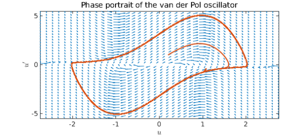
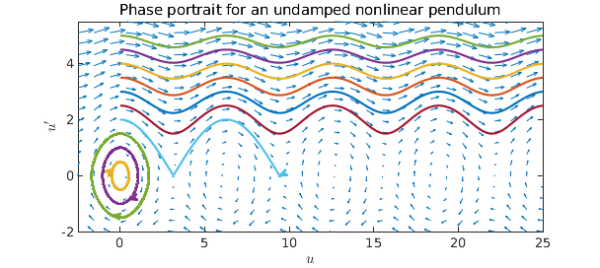
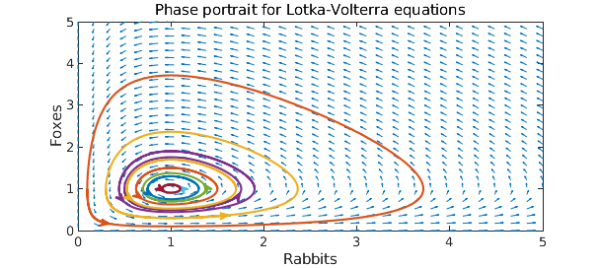

Phase portraits
Phase portrait are geometric representations of the trajectories of a dynamical system in the phase plane, and are an important tool in the study of dynamical systems [1]. They consist of plots of trajectories in the state space, which frequently corresponds to plotting the derivative of a solution against the solution (in the case of second order ODEs), or the plot of one solution variable against another (in the case of coupled first order systems).
When drawing phase portraits, it's useful to draw vector fields to see the rate of change of solutions at a particular point in the phase plane. The chebop class now has a $\mathtt{quiver}$ method that draws such vector fields. It works for both coupled first order systems with two unknown functions (where the second function gets plotted against the first), and second order scalar problems (which get automatically reformulated to first order systems, and where the phase plane plotted corresponds to plotting the derivative of the solution against the solution). Here we show a few examples of how the quiver method of chebop can be called.
The van der Pol equation
The first ODE we consider is the van der Pol equation [2], a second order nonlinear ODE, given by
$$ u'' - \mu(1-u^2)u' + u = 0. $$
We start by defining a chebop defining the differential equation (selecting $\mu = 3$). Note that we specify the domain of the chebop as well (even though it's not necessary for the quiver plot itself, it will allow us to overlay particular solutions on the quiver plot).
N = chebop(0,100); N.op = @(t,u) diff(u, 2) - 3*(1-u^2)*diff(u) + u;
We call quiver with N as an argument, along with a vector argument that specifies the lower and upper limits on the $x$ and $y$ axes. Furthermore, we give further arguments for customizing the plot, which are described in detail in the help text of chebop/quiver.
Once we have called quiver, we overlay the phase plane portraits of solutions obtained by specifying different initial conditions -- notice how the solutions follow the arrows of the quiver plot, then get attracted to the same limit cycle (regardless of whether we start inside or outside of the cycle).
quiver(N, [-2.75 2.75 -5.5 5.5],'xpts', 40, 'ypts', 40, 'scale', .5, ...
'normalize', true)
hold on
for init = 0.2:0.4:0.2
N.lbc = [init; 1];
u = N\0;
plot(u, diff(u))
end
title('Phase portrait of the van der Pol oscillator','interpreter','latex', ...
'fontsize',11)
xlabel('$u$','interpreter','latex', 'fontsize',10)
ylabel('$u''$','interpreter','latex', 'fontsize',10)
hold off

A mathematical pendulum
The next ODE we consider is that controlling the trajectory of a nonlinear pendulum,
$$ u'' + \sin(u) = 0. $$
Again we define a chebop, call quiver and overlay solutions for trajectories starting from the stable equilibrium $u=0$ but with different initial velocities on the plot.
N = chebop(0, 50);
N.op = @(t,u) diff(u,2) + sin(u);
quiver(N, [-2.5 25 -2 5.5],'xpts',30)
hold on
for init = 0:0.5:5
N.lbc = [0, init];
u = N\0;
plot(u, diff(u))
end
hold off
xlim([-2.5 25])
title('Phase portrait for an undamped nonlinear pendulum','interpreter', ...
'latex', 'fontsize',11)
xlabel('$u$','interpreter','latex','fontsize',10)
ylabel('$u''$','interpreter','latex', 'fontsize',10)

We see that for small enough initial velocities, the pendulum swings back and forth around the equilibria $u=0$, while for larger initial velocities, it swings over and over the top position. However, if we introduce damping, all trajectories will eventually end up at rest:
N.op = @(t,u) diff(u,2) + 0.25*diff(u) + sin(u);
quiver(N, [-2.5 25 -2 5.5],'xpts',30)
hold on
for init = 0:0.5:5
N.lbc = [0, init];
u = N\0;
plot(u, diff(u))
end
hold off
title('Phase portrait for a damped nonlinear pendulum','interpreter','latex', ...
'fontsize',11)
xlabel('$u$','interpreter','latex','fontsize',10)
ylabel('$u''$','interpreter','latex','fontsize',10)
Lotka-Volterra predator-prey model
The final example we consider are the The Lotka-Volterra equations, which model the populations of predators (say foxes) and prey (say rabbits) [3]. These are a pair of nonlinear, first order differential equations, and exhibit the behaviour that in the absence of predators, the prey population grows exponentially, while the predator population shrinks if the prey population is too small. The equations are given by
$$ u' = au - buv, \quad v' = -cv + duv $$
where $a, b, c$ and $d$ are real parameters that describe the interaction of the two species.
We begin by setting all the parameters equal to 1, and draw solutions in the phase plane obtained from different initial populations of rabbits (keeping the initial population of foxes fixed).
N = chebop(@(t,u,v) [diff(u)-u+u.*v; diff(v)+v-u.*v], [0 10]);
quiver(N, [0 5 0 5],'xpts',30,'ypts',30,'normalize',true,'scale',.4)
hold on
for rabbits = 0.1:.2:1.9
N.lbc = @(u,v) [u - rabbits; v - 1]; % Initial populations
[u, v] = N\0;
plot(u, v)
end
hold off
title('Phase portrait for Lotka-Volterra equations', 'interpreter','latex', ...
'fontsize',11)
xlabel('Rabbits','interpreter','latex','fontsize',10)
ylabel('Foxes','interpreter','latex','fontsize',10)

The cyclical behaviour of the populations is evident. What happens if we increase the reproduction rate of the rabbits by 50%?
N = chebop(@(t,u,v) [diff(u)-1.5*u+u.*v; diff(v)+v-u.*v], [0 10]);
quiver(N, [0 5 0 5],'xpts',30,'ypts',30,'normalize',true,'scale',.4)
hold on
for rabbits = 0.1:.2:1.9
N.lbc = @(u,v) [u - rabbits; v - 1]; % Initial populations
[u, v] = N\0;
plot(u, v)
end
xlim([0 5]), ylim([0 5])
hold off
title('Phase portrait for L-V eqns., increased rabbit reproduction',...
'interpreter','latex','fontsize',11)
xlabel('Rabbits','interpreter','latex','fontsize',10)
ylabel('Foxes','interpreter','latex','fontsize',10)

Comparing the phase portraits, we observe that while the maximum rabbit population increased, it was by much less than 50%. In fact, the maximum population of foxes grew more than that of rabbits.